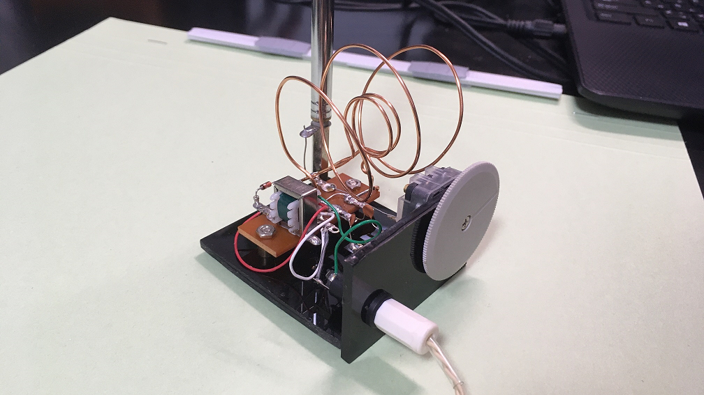
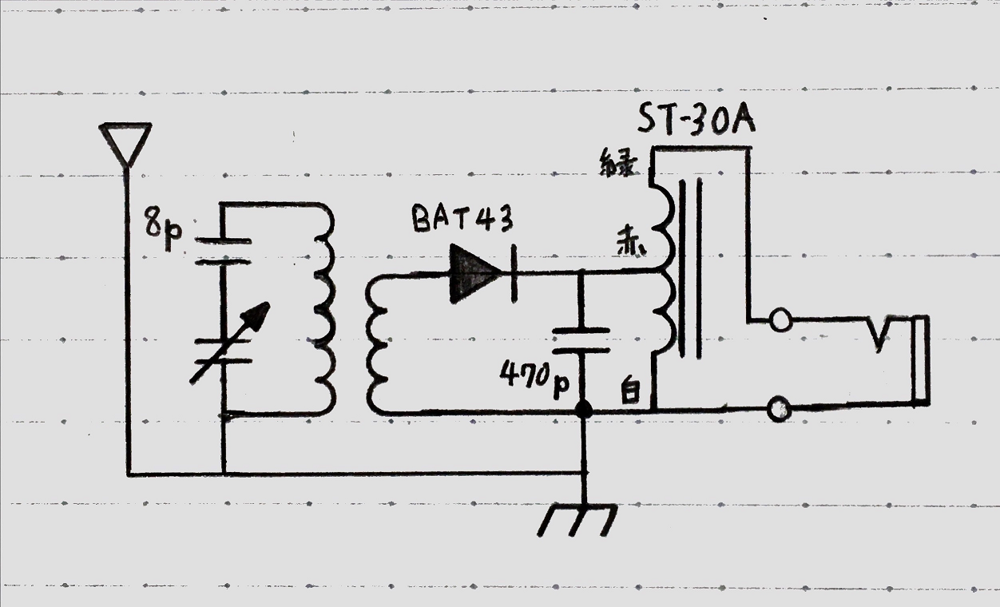
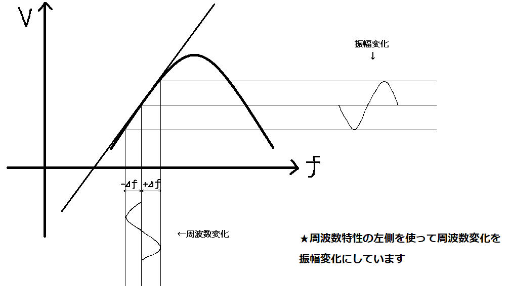

通信の本に載っていた FM 検波器の中に、スロープ検波という方式がありました。この検波方式の回路図が AM 用ゲルマラジオのそれとそっくりだったので、FM 用ゲルマ(?)ラジオを作ってみました。

無電源FMラジオ
手書き失礼します。CADよりコイルを描くのが楽なので…

無電源FMラジオの回路図
まさに AM ゲルマラジオ、といった感じの回路図ですがあくまで FM ラジオです。FM 用のバリコンは入手性が悪すぎるので、AM 用270pF のバリコンへ直列にコンデンサを入れて代用しました。
アンテナの位置が変ですが、いろいろ試した中でここにつなぐのが一番強く受信できました。なぜアースにつなぐと感度が良くなるのかよくわからないので何かご存じの方は教えていただけるとありがたいです。
検波用ダイオードは 1N60 などのゲルマニウムダイオードも試したのですが、手持ちでは BAT43 というショットキーバリアダイオードが一番感度良く受信できました。FM ゲルマラジオと名乗りたいのですが、これではショットキーラジオといったところでしょうか…
このラジオは組み立てそのものは簡単なのですが、AM ゲルマラジオと違って扱う周波数が高いのでコイルの調整が異常に難しいです。同調周波数から中空コイルの巻き数、長さ、直径をあらかじめ算出してはいるのですが、そうそう計算通りにいかないので色々試す必要があります。今回は直径 40mm 3回巻きと直径 15mm 2回巻きの組み合わせが選択度、感度ともに良好になりました。
私の家は窪地にあり、まともにラジオの電波は飛んでこないので FM トランスミッタを使って調整しました。ごく弱い電波しか出ないので、結構近づける必要はありますがとてもよく鳴りました。好きな周波数で電波を飛ばせるので、強電界地域にお住まいでも FM トランスミッタがあったほうが調整は楽だと思います。
このラジオで実際の放送も聞こえるか試したいのですが、送信所が近くに無くまだできていません。
前述した通りこのラジオはスロープ検波という方式で検波しています。これは、RC または RL のハイパスフィルタや、同調回路の周波数特性の直線部分を利用することで周波数を振幅に変換する方式です。…と言葉で書いてもピンとこないので簡単な図を書きました。

スロープ検波の原理図
図のように、周波数特性の山の左側にある直線部分を利用し、周波数変化を振幅変化に変換することで FM 波を AM 波として検波しています。このため AM ゲルマラジオとほぼ同一の回路構成で検波できます。線形になる範囲はわずかであるため変調が深くなるほど歪が大きくなります。
| 部品名 | 仕様 | 備考 |
|---|---|---|
| ポリバリコン | AM用 / 270pF | FM用代用 |
| セラミックコンデンサ | 8pF / 470pF | - |
| ショットキーバリアダイオード | BAT43 | STマイクロ など |
| アウトプットトランス | ST-30A | 橋本電気株式会社 |
| ロッドアンテナ | 7段 96cm | - |
| ポリウレタン線 | 直径 1.0mm | - |
| セラミックイヤホン | - | - |
部品点数も少なく、組み立ても簡単なのですが調整がシビアで、AM ゲルマラジオよりも再現性がかなり低いので工作教室的なものには向かないと思います。
しかし単純な回路なのに FM
が聞けるというのはなかなか面白い題材なのではないかと思います。